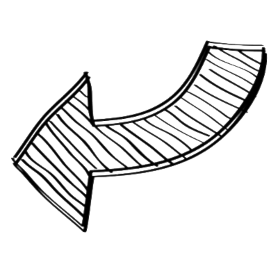

Thomas Guesdon
Thomas Guesdon
Mail
Github
Twitter
Home
My resume
Twitch interactive quizz
TG's E-commerce photo cleaner
All other cool projects
Hi, I'm Thomas Guesdon
A fullstack developper with interests in web development and signal processing
Feel free to take a glance at my work :)
